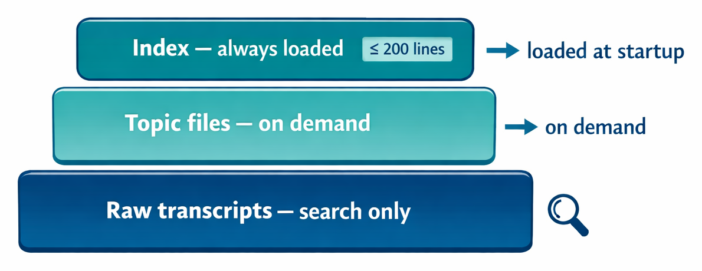

The previous two lectures built memory that grows. A notes file collects conclusions, and an episode log collects events. Neither one ever shrinks, and neither one ever corrects itself. An agent that serves a user for months needs to remember, and it also needs to forget, merge, and revise. This lecture covers consolidation: the process that keeps memory accurate as it grows. It explains what goes wrong without consolidation, when consolidation should run, what it does, and how an agent carries it out. It closes with OpenClaw, an agent whose memory cycle shows all of these pieces working together.
The lecture also returns to a theme that runs through the whole course. Consolidation depends on judgment: deciding which fact is current and which notes mean the same thing. Code alone cannot make those calls well. An LLM can, given a well-written prompt. Consolidation is one more place where an agent puts a model's judgment to work.
A memory store that only grows develops four kinds of errors:
Module 5 warned against contradictions in a prompt, because a model given conflicting instructions has no reliable way to choose between them. Memory that is injected into the context becomes part of the prompt, so the same rule applies. People change their minds, projects change direction, and a memory store records every version unless something cleans it up.
Module 4 made a related point about context: more tokens are not better, and a smaller set of relevant, accurate information beats a larger set full of noise. Memory follows the same rule. A short index of current facts serves an agent better than a long one full of conflicts.
Stale memory is worse than no memory. A model treats a stored fact as true. If the fact is out of date, the model gives a confident wrong answer built on it. If the fact was never stored, the model has to look at the current source, such as the code or the user's latest message, and it finds the truth.
An agent could curate its memory as it works, fixing entries during each conversation. This is usually the wrong time, for three reasons:
Most systems therefore split the work. They append during sessions, recording episodes and notes as they happen, like water from a fire hose. They consolidate between sessions, as a separate job. That job can run when a session closes, after every few sessions, or, most commonly, as a background process overnight. At that point there is no user waiting, no task in progress, and the full history is available.
The human brain does something similar. Sleep is when experiences are merged, conflicts are resolved, and specific events become general knowledge. This is why several systems describe their consolidation job as "dreaming." The word is borrowed, and somewhat anthropomorphic, but it describes the job accurately.
Consolidation turns episodic memory into semantic memory. Many timestamped events become a few current facts. Consolidation can also drop episodes that no longer matter, update entries when files are renamed, and mark decisions that were later reversed.
The reflection mechanism from the Generative Agents paper, covered in the previous lecture, is an early form of consolidation. It also turns raw observations into higher-level conclusions. The difference is timing: Generative Agents reflects during a session, when the importance of recent events passes a threshold, while the production systems in this lecture consolidate between sessions.
Consolidation maintains a memory store with a common three-layer shape:

MEMORY.md index, whichever is smaller, at the start of every session.This is progressive disclosure, from Lecture 4.3, applied to memory: a small summary is always in the context, and the details load on demand. Building and maintaining these layers is part of consolidation. The job decides which facts belong in the index, which belong in topic files, and which can stay in the transcripts.
The right size for an index depends on what the agent can afford to load in every session. Claude Code uses about 200 lines; 50 to 100 entries is reasonable for most agents. Having a limit and enforcing it matters more than the exact number.
One filter applies before anything is written to any layer: do not store what the agent can read from the source. For a coding agent, file structure, function signatures, and dependencies are all in the codebase. A stored copy goes stale the moment the code changes, while a fresh read is always current. Facts the agent cannot read from the source are worth storing: build and test commands that are not obvious, fixes found through long debugging, decisions and the reasons behind them, and user preferences.
Consolidation can be implemented in many ways, but most implementations pass through four phases:
Recent sessions show where the user is now. For the tutoring agent, early in a semester the student may not understand variables. By the end of the course that struggle is long resolved, and keeping it in memory would mislead the agent. Gathering signal from recent sessions lets consolidation weight the present over the past.
These four phase names come from reports on AutoDream, a Claude Code feature found through third-party analysis of Claude Code's code. AutoDream is unreleased, and Anthropic has not documented it. Reports describe it as a background job that runs after at least 24 hours and five sessions have passed since its last run, with write access limited to the memory directory. Its details may change or never ship. The four phases are a useful model of consolidation either way.
Plain code can remove exact duplicates and enforce a line cap. It cannot tell that a later episode resolves an earlier struggle, or that two differently worded notes mean the same thing. Those decisions take judgment, so consolidation hands them to an LLM. Without a model, writing deterministic code to decide what is important would be very difficult. With a model, consolidation becomes a practical task.
Consolidation is an agent program working with an LLM when no user is present. The harness gathers the current memory and the episodes recorded since the last run, sends them to a model with a consolidation prompt, and writes back the result. A sketch of the harness side, for the tutoring agent from the previous two lectures:
def consolidate(session):
notes = open("NOTES.md").read()
episodes = load_since(last_run()) # episodes.jsonl
prompt = CONSOLIDATE.format(session=session, notes=notes,
episodes=as_text(episodes))
new_notes = llm(prompt) # one call, no tools
shutil.copy("NOTES.md", "NOTES.md.bak") # keep the old version
open("NOTES.md", "w").write(new_notes)
The prompt decides what to keep. The harness decides when the job runs and what it can change. This is the same division of labor as in Lecture 9.1. The harness does what code does well. It picks the schedule, passes only the new episodes, keeps a backup, and writes only the memory file.
For a single notes file, one model call that returns the whole new file is enough. A store with many topic files needs more: an agent loop whose file tools are limited to the memory directory, so the model can read and edit files one at a time without touching anything else. AutoDream reportedly works this way. A large agent's nightly consolidation can run for hours.
The consolidation prompt resembles a system prompt, but no user takes part. It tells the model how to turn old memory and new events into new memory:
You maintain the memory of a tutoring agent. Below are the
current notes and the episodes recorded since the last update.
Rewrite the notes so they are correct after session {session}.
- Keep only what changes how you will teach this student:
finished topics, repeated struggles, fixes that worked,
and plans for the next session.
- If an episode contradicts a note, keep the newer fact.
- Merge notes that say the same thing.
- Delete notes that no longer apply, such as plans already done.
- Use session numbers, never "last time" or "yesterday".
- Keep the file under 30 lines.
<notes>{notes}</notes>
<episodes>{episodes}</episodes>
Return only the new NOTES.md.
Each rule maps to one of the four phases:
"Keep the newer fact" works only because each episode carries a session number, which is why the episodes in the previous lecture stored one. The XML tags separate the data from the instructions, as Module 5 recommended. To adapt the prompt for another agent, change the first line and the "keep only" list.
The input is the NOTES.md file from Lecture 9.1 plus the episodes from sessions 4 through 6 in Lecture 9.2. Before consolidation:
## Finished
- Loops and lists
## Struggles
- Off-by-one errors in loop bounds
- Confuses append() and extend()
## Next session
- Start functions
- Review range() first
After one run of the prompt with Haiku (wrapped and trimmed):
## Finished
- Lists, including append() vs. extend() (session 4)
## In progress
- Functions: return instead of print (5); define before call (6)
- Recursion: start with the base case
## Struggles
- Off-by-one loop bounds (sessions 4, 5). Works: range() stops
before its end; trace the loop on paper.
## Next session
- Review range() bounds first
- Recursive function, base case first
Each change traces to a rule. "Start functions" was a plan that is now done, so it was removed. The two loop episodes merged into one struggle, which now records what worked. The append() and extend() confusion was resolved in session 4, so it moved to Finished. The model also added an "In progress" section that the prompt did not ask for. That is acceptable here, and a stricter prompt could fix the headings.
The output varies from run to run, and a model can delete something that mattered. Designs guard against this in a few ways. The sketch above keeps a backup before writing. Anthropic's Dreams feature, in Claude Managed Agents, never modifies its input at all: it reads a memory store and up to 100 session transcripts and produces a new, cleaned-up store for review. OpenClaw writes a summary of each consolidation for a person to read. And the episode log itself is never consolidated, so the raw events remain available.
OpenClaw, introduced in Lecture 4.2 for context compaction, is a persistent agent that runs on the user's own machine. Users message it through apps such as Telegram, and it handles tasks like scheduling calendar invites. Because it is always on, a user's interactions with it feel like one long session. Maintaining memory is one of its central jobs. OpenClaw keeps all of its memory in Markdown files on disk and moves through a daily cycle:
memory/YYYY-MM-DD.md.MEMORY.md. It also writes a summary to DREAMS.md for a person to review.MEMORY.md loads at startup, along with today's and yesterday's notes.The daily notes are episodic memory. MEMORY.md is semantic memory. Dreaming turns one into the other. OpenClaw shows the full pattern of this lecture in one system: append during sessions, save before context is lost, consolidate between sessions, and load the result next time.
Not immediately. An agent with short, bounded sessions may never accumulate enough memory to need a consolidation job. An agent that builds up knowledge over days or weeks does need one, and the need grows with time. The principles apply even without a full automated cycle: a bounded index, the rule against storing what can be read from the source, and curation as a separate step from the agent's main work.
Memory degrades without curation, through contradictions, stale references, relative dates, and duplicates, and stale memory is worse than no memory. Consolidation runs as a separate job, usually between sessions, when no user is waiting and the full history is available. It turns episodes into facts. A common store keeps a small index loaded, reads topic files on demand, and only searches raw transcripts. Do not store what the agent can read from the source. An LLM does the curation: the harness sends the current memory and new episodes with a consolidation prompt, then writes back the result, keeping a backup. OpenClaw shows the cycle in practice, appending daily notes during sessions and consolidating them into MEMORY.md every night. Memory is LLM-centered from start to finish: the model decides what to record, which memories to retrieve, and how to curate them.
The next module turns to skills, a form of procedural memory.